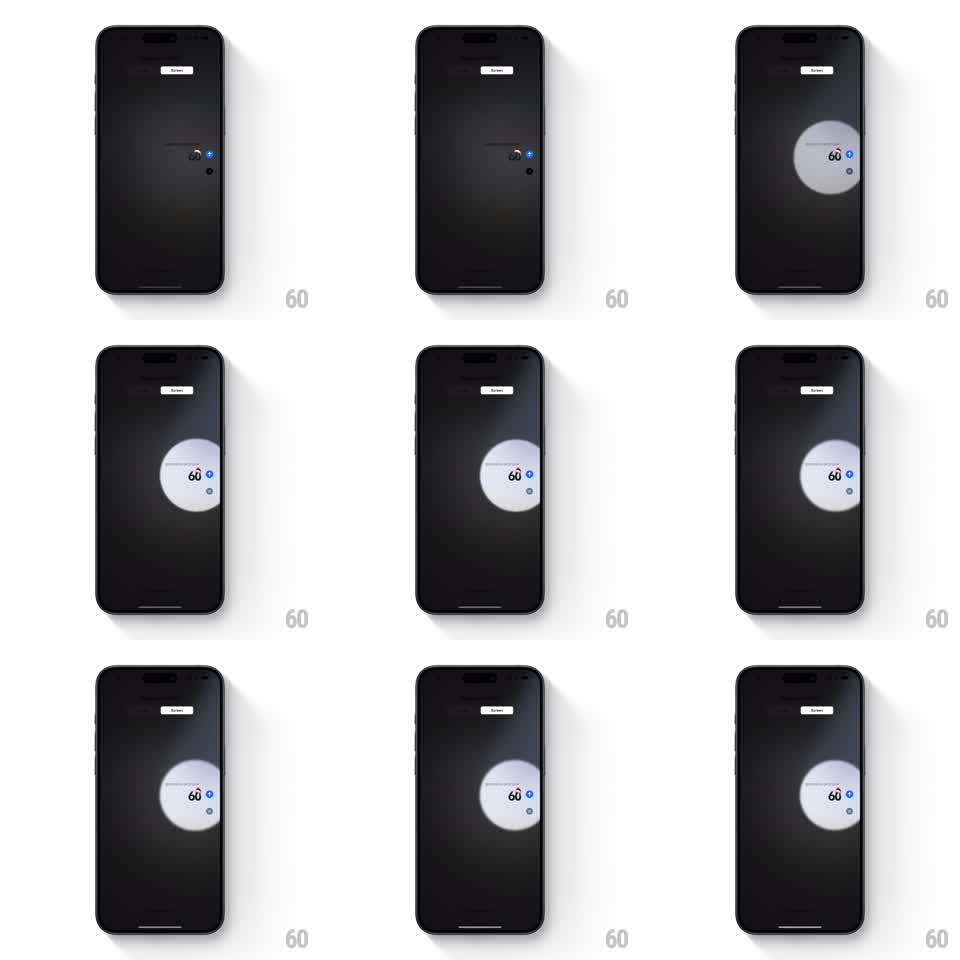

Media
Frame-by-frame

Rebuild this animation 1:1: Apple Messages' Spotlight screen effect - the screen goes dark and a theatrical spotlight finds the sent bubble, sweeps around it, then holds and fades.

Rebuild this animation 1:1: Apple Messages' Spotlight screen effect - the screen goes dark and a theatrical spotlight finds the sent bubble, sweeps around it, then holds and fades. ## Integration Integration: stack-agnostic spec - springs given as stiffness/damping, timed motions as duration + curve; map every value to your framework and animation library of choice. ## Scene The Messages "Send with effect" preview: the conversation dims to near-black, leaving the sent bubble barely visible. A round spotlight blooms over the bubble, then roams - drifting across the darkened stage and returning - before settling back on the bubble and fading out. ## Motion spec Pattern: spotlight sweep, ~5s total. - The conversation dims to about 15 percent brightness over 300ms; the bubble stays at full brightness inside the beam. - The spotlight appears small over the bubble (200ms), then widens and slides away across the screen (700ms, ease-in-out), as if searching the stage. - It sweeps back toward the bubble (600ms), orbits briefly around it, then locks on. - On lock, the beam tightens around the bubble (150ms) with the bubble fully lit, holds ~1.5s, then the whole effect fades: screen brightens back, spot dissolves (400ms). ## Calibration - The beam is a soft-edged radial gradient (hard core, feathered falloff) - a real stage light, not a hard mask circle. - Everything outside the beam stays dim; text under the light is crisp. ## Reduced motion Bubble brightens with a halo while the rest dims, no sweep. ## Don't miss - The spotlight wanders away from the bubble and comes back - the searching beat is the effect. - The dimming covers the entire conversation, including the header tabs.